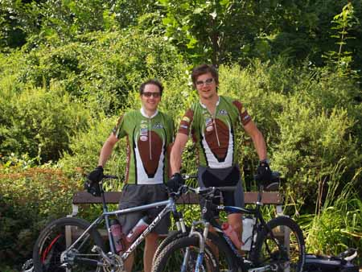

Auch Transalp Rennen nicht vor FSC Bikern sicher!
Mit dem Bike auf den Spuren Hannibals
Sie gilt als eine der größten Herausforderungen für einen Mountainbiker: die Transalp, das Mehrtagesrennen über die Alpen von Bayern nach Italien. Die Biker Christof Hepp und Johannes Knafl vom Funsportclub FSC 3x6=18 wollen sich nun dieser Challenge stellen. Start des Rennens ist am 19.7.2008 in Füssen. Am 26.7. planen die beiden in Riva durchs Ziel zu fahren sein. Bis dahin werden sie rund 665 Kilometer und 21,700 Höhenmeter zurückgelegt haben.
Alles begann bei ein paar „Elektrolytgetränken“ am Stammtisch kurz vor Weihnachten vergangenen Jahres: „Johannes und ich waren auf der Suche nach sportlicher Herausforderung und einem Trainingsziel für die kommende Saison“, berichtet Christof Hepp (26). „Und so kamen wir auf die Transalp“, ergänzt sein Kumpel Johannes Knafl (28). „Transalp“, das ist das Synonym für die Überquerung der Alpen auf dem Mountainbike. Auf den Spuren Hannibals sozusagen, nur eben ohne Elefanten.
Eine Schnapsidee? Von wegen. Die beiden machten sich gleich im Jänner ans Trainieren. „Anfangs auf der Rolle, danach nahezu täglich im Gelände“, erzählt Hepp. Für Knafl und ihn, beide studieren in Graz, ist es die erste Teilnahme an einem so großen und vor allem so anstrengenden Bike-Rennen. Neu ist auch, dass die Burschen in den Farben des Funsportclubs FSC 3x6=18 starten. Der Kontakt zum FSC kam über Hannes Kurtz, selbst Biker beim Funsportclub, zustande.
Im Team wollen Hepp und Knafl die Alpen bezwingen. Das Ziel, das sich die beiden Studenten gesteckt haben, ist hoch: Die insgesamt 665 Kilometer lange Route führt in Nord-Süd-Richtung über zahlreiche Gebirgspässe. Los geht’s am 19.7.2008, Startort ist Füssen in Bayern. In täglich vorgegebenen, im Schnitt 83 Kilometer langen Etappen, werden insgesamt 21,700 Höhenmeter zurückgelegt, wobei ein tägliches Zeitlimit von 9 Stunden eingehalten werden muss. Am 26.7. hoffen die beiden auf den Zieleinlauf in Riva an den Ufern des Gardasees.
Die wahrscheinlich erste Alpenüberquerung mit dem Mountainbike wurde übrigens von dem Bergführer Andi Heckmair 1989 ausgearbeitet, als das Mountainbike gerade seinen Siegeszug angetreten hat. Der Ausgangspunkt war Oberstdorf, das Ziel sollte Riva am Gardasee sein. Damals wurde die berühmte „Heckmair-Route“ geboren. Sie wurde 1991 in der Zeitschrift „Bike“ veröffentlicht. In gerader Linie führt sie, Autostraßen vermeidend, auf alten Saumpfaden quer über die Alpen. Sie überwindet auf einer Strecke von 312 Kilometer eine Höhendifferenz von 13.500 Meter.
Der Funsportclub FSC 3x6=18 wünscht Johannes und Christof viel Erfolg!
zurück
Sie gilt als eine der größten Herausforderungen für einen Mountainbiker: die Transalp, das Mehrtagesrennen über die Alpen von Bayern nach Italien. Die Biker Christof Hepp und Johannes Knafl vom Funsportclub FSC 3x6=18 wollen sich nun dieser Challenge stellen. Start des Rennens ist am 19.7.2008 in Füssen. Am 26.7. planen die beiden in Riva durchs Ziel zu fahren sein. Bis dahin werden sie rund 665 Kilometer und 21,700 Höhenmeter zurückgelegt haben.
Alles begann bei ein paar „Elektrolytgetränken“ am Stammtisch kurz vor Weihnachten vergangenen Jahres: „Johannes und ich waren auf der Suche nach sportlicher Herausforderung und einem Trainingsziel für die kommende Saison“, berichtet Christof Hepp (26). „Und so kamen wir auf die Transalp“, ergänzt sein Kumpel Johannes Knafl (28). „Transalp“, das ist das Synonym für die Überquerung der Alpen auf dem Mountainbike. Auf den Spuren Hannibals sozusagen, nur eben ohne Elefanten.
Eine Schnapsidee? Von wegen. Die beiden machten sich gleich im Jänner ans Trainieren. „Anfangs auf der Rolle, danach nahezu täglich im Gelände“, erzählt Hepp. Für Knafl und ihn, beide studieren in Graz, ist es die erste Teilnahme an einem so großen und vor allem so anstrengenden Bike-Rennen. Neu ist auch, dass die Burschen in den Farben des Funsportclubs FSC 3x6=18 starten. Der Kontakt zum FSC kam über Hannes Kurtz, selbst Biker beim Funsportclub, zustande.
Im Team wollen Hepp und Knafl die Alpen bezwingen. Das Ziel, das sich die beiden Studenten gesteckt haben, ist hoch: Die insgesamt 665 Kilometer lange Route führt in Nord-Süd-Richtung über zahlreiche Gebirgspässe. Los geht’s am 19.7.2008, Startort ist Füssen in Bayern. In täglich vorgegebenen, im Schnitt 83 Kilometer langen Etappen, werden insgesamt 21,700 Höhenmeter zurückgelegt, wobei ein tägliches Zeitlimit von 9 Stunden eingehalten werden muss. Am 26.7. hoffen die beiden auf den Zieleinlauf in Riva an den Ufern des Gardasees.
Die wahrscheinlich erste Alpenüberquerung mit dem Mountainbike wurde übrigens von dem Bergführer Andi Heckmair 1989 ausgearbeitet, als das Mountainbike gerade seinen Siegeszug angetreten hat. Der Ausgangspunkt war Oberstdorf, das Ziel sollte Riva am Gardasee sein. Damals wurde die berühmte „Heckmair-Route“ geboren. Sie wurde 1991 in der Zeitschrift „Bike“ veröffentlicht. In gerader Linie führt sie, Autostraßen vermeidend, auf alten Saumpfaden quer über die Alpen. Sie überwindet auf einer Strecke von 312 Kilometer eine Höhendifferenz von 13.500 Meter.
Der Funsportclub FSC 3x6=18 wünscht Johannes und Christof viel Erfolg!
zurück